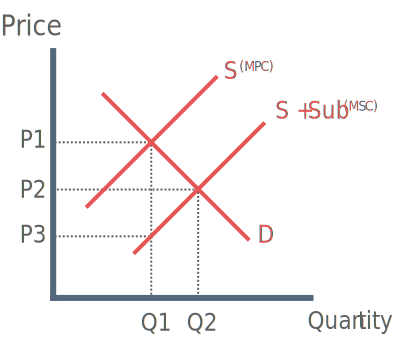

Subsidies: An amount of money given directly to firms by the government to encourage production and consumption. They are often used by the government to encourage the consumption of a merit good.
Merit Good: A good that is under provided and under consumed if left to the free market.
Theory
What is a subsidy?
A subidy is a sum of money given to a firm, often by the government, that reduces the price of the good thus encouraging higher consumption.
Real world examples of subsidies include agricultural subsidies that are distributed in accordance with the Common Agricultural Policy (CAP) by the E.U.

The government issue a subsidy equal to the area Q1 - Q2
A subsidy causes the supply curve to shift right (S - S + Sub)
This increases consumption to the socially optimum level Q2
Note: Consumers only experience a fall in the price from P to P1. The producer keeps P2 to P3
Advantages of Subsidies
1) Greater Social efficiency
Subsidies achieve a lower price and a higher quantity demanded for merit goods, therefore leading to social efficiency.
2) Reduction of negative externality
3) Reduces cost of capital investment
Subisidies lower the costs of production, firms therefore have more surplus profit that they can invest in more efficient capital equipment.
However depending on the level of confidence in the economy profits may not be returned to capital and may be held by the firm.
However in recent years, government has offered even larger subsidies for more efficient firms, thus encouraging capital investment.
4) Large subsidies can also be used to control inflation
In the last couple of years several countries have been offering fuel subsidies to consumers and businesses in the wake of the steep increase in world crude oil prices.
Disadvantages of Subsidies
1) Subsidies have to be paid by the government
If the cost of the subsidy is greater than increase in social efficiency then government failure will arise. Money may have been better spent elsewhere. The final cost of a subsidy usually falls on consumers (or tax-payers) who themselves may have derived little benefit from the subsidy.
However the government may claim some money back in the form of corporation tax and indirect taxation (VAT) on spending by the firm.
2) Distortion of the Market
Subsidies distort market prices – for example, export subsidies. This could create bad relations with other countries especially in trading unions such as the E.U. In an extreme case this could encourage protectionism, which may form in to political row.
3) Time Lags
There may be time lags with government policies such as subsidies due bureaucracy application process for subsidies.
4) Encourages Inefficiency
Subsidies can artificially protect inefficient firms who need to restructure. Moreover the government has made the mistake in recent years of using subsidies to revive industries that are declining. E.g. Fisheries.
Evaluation
The effectiveness of subsidies depends on the elasticity of the good on which it is placed. The subsidising of an inelastic good may come at significant financial cost to the government.